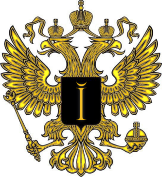

Clans/I
{kind=link}

"Imperium" - clan of people who plays for fun, and pretending to be 'pro'. Most of clan members are Poles, but even if you are not Pole and you want to join glorious Imperium, visit our channel #IMPERIUM or speak with members.
ALL HAIL IMPERIUM
ALL HAIL EMPEROR
ALL HAIL TO US
ALL WILL BOW BEFORE US
HEAR ME ROAR
IMPERIUM IS COMING
His Imperial Majesty, the Emperor of Imperium, Supreme Protector of Galaxy.
Silversurfer
japko
Pipboy
Tluszczeboy
A long time ago in a galaxy far, far away...
Whole cosmos holds its breath, when it happened. Emanation of overwhelming power began to shine in Totala Galaxy. People and intelligent robots living in it didnt know what to do in the face of such a great event. Suddenly, big explosion appeard. Explosion of enormous glory and might, preceded by a stream of pride.
He was born.
The Emperor.
Being of unimaginable might and power, emanating such a powerful energy that the space curved around Him. When He opened eyes, they flashed with the power of soul, a noble and just spirit of great power.
And He saw society.
Society of humankind ruled by galactic government – The Core. Society living in peace and prosperity. The Emperor watched grow of galactic state, but quickly get bored of that. He sent his avatars as elusive shadows to Core Prime and began to whisper…
“Your mastery of technology have is unmatched, but you still dying. Flesh of mortals is susceptible to illness and harm. Wouldn’t it be better to leave the mortal body and make mind immortal?â€
Then Core invited technology called “patterning†and ordered that all citizens must undergo this procedure. But Emperor appeared at edges of galaxy and began to whisper again…
“The Core has no right to decide about life and death of humans. If we become machines, we lose humanity. Friendship and love, all the emotions will disappear and only cold eternity will remain. This madness need to be resisted.â€
The War spread throughout whole galaxy. What was initially a war of ideas, quickly became a bloody conflict without end. Both factions desired to destroy enemy, no matter with what costs.
When He saw effects of His intrigues, The Emperor lol’d.
War lasted for 4000 years and finally Arm forces destroyed Core after assault of capital planet Core Prime. At the last moment Emperor grabbed Core Commander and hid him from Arm sight in a distant star system. Arm started to rebuild society destroyed by War, but Emperor was bored and lost interest of this galaxy.
He heard something about great CORE plan to destroy universe, but He quickly forgot about that.
Many millenias later, he heard that shadowy cabal known as Swedish Yankspankers breathed new life into Totala Galaxy, now called Spring Galaxy. Intrigued Emperor returned and he saw another Great Conflict – not for ideas, but for fun and lulz. Hundreds of Core and Arm commanders fighting each other with their forces, new technologies, even odd chicken aliens.
Then He marched into battle with hymns of glory on mouth. He fought in hundreds of battles in biggest BA System, and dozens in smaller – NOTA, CA, XTA.
But He felt lonely. So He said: “LET [I]T BE!!!†and the Imperium was created.
To the imperial forces soon joined knowledged commanders, like Stainboy (known now as Silversurfer), Japko, Pipboy, also Forgotmypass2 (known now as Tluszczeboy). Imperium won many battles in galaxy and everyone knows name of The Emperor. Another commanders joined Imperium – SkyCaptain, insane Clobber, and even more forgotten names. But all the time, core of the imperial forces were these four who joined Imperium at the every beginning. So mighty Emperor created Consilium Imperialis – ruling body of his monarchy and promoted them into it. Stainboy became imperial Chief-of-Staff and Second-in-command, while Forgotmypass2 received an office of Imperial Inquisitor.
Glory and power of Imperium still grows, the Emperor as first used biggest weapon in Senna MapMod System (known now as Tech Annihilation System), The Tsar Gun.
It seemed that nothing could stop Imperium, but suddenly a terrible thing happened.
Nobody knew what really happened, but one fact was undeniable – His Imperial Majesty, Conrad I the Magnificent, Emperor of Imperium, Supreme Protector of Galaxy disappeared. People of Imperium cried and Consilium Imperialis was brought before the difficult choice.
Who should rule Imperium during absence of the Emperor?
Soon japko was elected as regent. He brought imperial forces in new, reborned Zero-K System (formerly CA System) and conquered it in the name of the Emperor. Unfortunately, without presence of its Head, Imperium has become a shadow of its glorious past. Even the establishment of a best communication mumble system by Stainboy, didn’t helped.
Soon Zero-K System was conquered by bloody and unworthy criminal organizations, and Imperium was forced to leave it.
Then He returned.
Happiness of imperial citizens was immeasurable, when The Emperor marched again to The Imperial Throne. Again, whole imperial administration and warfare were linked to His unimaginable powerful mind.
Enemies of the Imperium screamed with fear and anger, when they heard of rebirth of Imperium.
He took in hands imperial scepter and globus cruciger, and took steps to restore the former glory of Imperium. At first, Emperor decided to conquer Zero-K System again. Even mighty Batman, skilled commander joined his forces.
Although initial successes, He couldn’t resist unworthy opponents. Even Emperor must eat, sleep and rest, and He have another duties also, but His enemies fought their battles without a single break.
“Ruler must know when to stop his lust of power. My people and commanders are tired of war. We should live in peace and prosperity.†– He thought and helped Nooby Cruels to win.
Now, Imperial Peace come to Zero-K System. But Emperor isn’t sleep and waiting to time when He will be able to liberate enslaved people of NC planets…